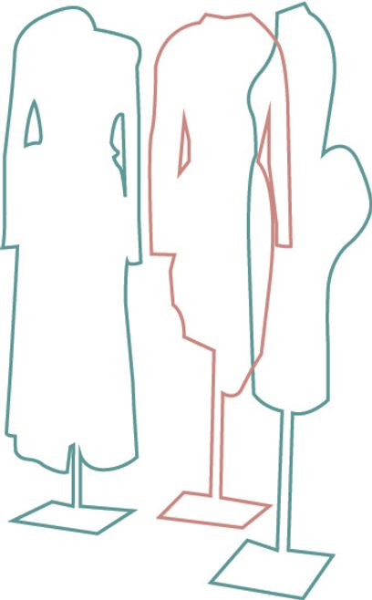

Surrealism and fashion design in the twentieth century and why that is important to contemporary fashion practice
Through this paper I am going to discuss the significant influence of the surrealism art movement on fashion design of the twentieth century focusing on select works by Elsa Schiaparelli, Rei Kawakobu and Lee Alexander McQueen. Through analysis of particular practices and garments of each designer I will make observations on this influence, its relevance now and how that can be applied to general fashion practice, and my own. Drawing on the techniques of surrealism, fashion design as exploration of body and form and the queer experience I will conclude on why surrealism is so important to fashion design.
Surrealism can be used as a lens to view key fashion moments of the twentieth century to highlight not only the avant garde stylistic aspects of surrealism but the surreal ‘body’ within fashion. Surrealism sought to release the creative potential of the unconscious mind, contextually, within fashion, this ties to how clothes can express the unconscious which ultimately distorts the body. This distortion can be prolific or subtle, designers such as Elsa Schiaparelli, Rei Kawakobu of Comme Des Garçon and Lee Alexander McQueen have all looked through the morphed lens of surrealism to question the shape of the ‘body’ within fashion and its significance in mainstream societies perception of beauty and aesthetic. Through modes of masquerade, artifice, play and emotion these designers tell a story of the symbiotic relationship of fashion design, surrealism and the body. Each using the principles of surrealism to show a subconscious story whether that be the literal inside of the body, which we see with Schiaparelli’s ‘skeleton dress’ of 1938. The ‘lumps and bumps’ of the mind and the body, seen in Comme des Garçons ‘body meets dress, dress meets body’ collection of 1997. Or in the painfully beautiful designs of Alexander McQueen in subsequent collections, however particularly in ‘Voss’ of 2001. As the timeline of these three designers spans across almost the entirety of the twentieth century they give insight into the relationship between fashion design and Surrealism. Their work translates to a reaction, as the work of surrealist fine artists does. All artists and designers are essentially reactors but what made surrealism so significant was that it was a different perception of that reaction, a perception I believe is still prevalent today through the work produced as a reaction of the queer experience and the unique needs of the community.
Elsa Schiaparelli was born in Italy in 1890 to a family of academics and scientists, she then married in 1914 and moved to France with her husband. They then ventured to New York where they estranged and Schiaparelli made friends with Man Ray and other intellectual creatives alike. She then moved to Paris with her daughter, having contacts through Man Ray with several Dadaist and Surrealist artists in the hub of creative expression that was Paris in the 1920s. She felt a disconnect with the fashion trends of the time, namely the contemporary sports clothes that Coco Chanel became so famous for (Papalas 2015). Designing her own clothes put her at the helm creatively and financially which allowed Schiaparelli to, as Papalas (2015, para. 5) said “alter the discourse around the female body, femininity, and gender identity and at the same time be successful at it financially.” Schiaparelli was a single mother and not financially stable so she used fashion design as a mode of income. It was not by chance that this happened, as the fashion industry through the early 20th century was one of the very few workforces where women could find success and gain financial independence.
The skeleton dress (Fig.1) by Schiaparelli uses surrealism to distort the body to show the inside on the outside. Considering the context of this dress the pressure for women to be thin and almost ‘skeleton like’ was likely not as intense as it has been over the last 20 years. Thus this dress shows immense foreshadowing for the fashion industries obsession with being thin, with trends such as ‘heroin-chic’ as an example. With this as framework, the ‘skeleton dress’ uses the surrealist technique of showing the interior on the exterior to demonstrate a new femininity where the female body is controlled by the woman wearing the garment (Papalas 2015). The history of the female nude in art was always seen through the male gaze. This as Papalas says (2015, para. 18) “tactile performance of femininity [is] juxtaposed with the spine, a metaphor for strength and fortitude, presents an exceptionally resilient and at the same time exposed femininity.” Juxtaposition is a staple of the surrealist movement, using metaphors to compare reality with surreality. By using surrealist techniques within her designs, such as masquerade and artifice, Schiaparelli inherently describes the relationship of the surrealism movement and fashion design from 1920-30s.
This idea of showing the internal structure of the body in Schiaparelli's work is so easily applied to trans bodies showing their emotional or desired structure. This highlights the importance of dress to the queer body and the queer identity. If Schiaparelli’s work could be adapted or inspire a design, for example, for a trans woman to accentuate typically feminine features it would be the use masquerade or artifice to convey and in fact reveal truth about that body. With the outlined modes of surrealism being masquerade, artifice, play and emotion, I argue designers can look to surrealism as a way to be inclusive of the trans body within fashion. Using the example of Schiaparelli is one way to adapt fashion, using concepts of surrealism to put ease on the harshness of the queer experience, especially because physical appearance is a big part of gender dysphoria. This of course would have to be a personalised design experience as all transgender people have their own idea of their own body and what they want for their body. This technique is then limited to made to order or custom fashion design much like traditional couture in that it creates a relationship between the designer and the wearer as they collaborate to produce the final garment.
Rei Kawakobu is the Japanese fashion designer at the helm of the Comme Des Garçon empire, she moved to Paris in 1980 where she begun to show at Paris Fashion Week along side fellow Japanese designer Yohji Yamamoto. These two eastern designers shocked the centre of western fashion with their ‘unfinished’ unshapely garments that were heavily influenced by the traditional Japanese Kimono. The Kimono as a garment fundamentally challenged the western ideas of the female body within fashion at the time; it’s loose fitting nature alone exemplified a different, and to the then western eye, surreal body. The arrival of their eastern influence in Paris redefined the principles of fashion in western society and begun to design for a different type of woman not constrained by the constructs of western beauty and physical sex appeal (Craik 1994). This commitment by Kawakobu to design for the woman wanting to attract not by her body but by her intellect resonates with surrealist ideas of illustrating the interior and the subconscious, on the exterior. This feminist expression within fashion design uses modes of surrealism to deconstruct the female body to be almost irrelevant to sex appeal, creating a surreal body incapsulated by fashion (Wilcox, 2001).
Kawakobu’s surreal body was prolific in Comme des Garçon’s 1997 spring/summer collection ‘Body Meets Dress, Dress Meets Body’. Kawakobu says of the collection “I wanted to design the body itself… I was keenly aware of the difficulty of expressing something using garments alone. And that is how I arrived at the concept of designing the body.” The body that Kawakobu designed in this collection was distorted by padded garments in a stretch gingham fabric creating bumps over the shoulders, hips and lower back (English 2011). This deconstruction of the body to create a new representation of the body was subversive to the norms of the western body within fashion. This is achieved through the critique of form and regular ways of presentation, similarly to surrealism in art which critiques the world we see and how it is perceived by the individual. Through artifice, play and emotion Kawakubo invites the audience to interpret the surreal world she presents through her designs just as surrealist artists do with their work, it is about the reaction to the visual stimulus, whether that be fashion or an artwork making Kawakobu’s work conceptually surrealist (Betts 2004).
Similarly to Schiaparelli’s surreal body Kawakubo has presented to audience an alternate form to the form of the wearers body. However here we see it become less literal and more obscure or of radical change. The idea of radical change and the queer experience are symbiotic with one another. In the experience of many you undergo a series of huge radical changes as a queer person discovering and adapting to a new life. You look to escape certain situations looking for the obscure, looking for the surreal. You as a queer person use masques, artifice, play and emotion to construct your own reality, sometimes to cope, sometimes out of necessity for a new reality. Making both experiences somewhat a surreal landscape, things you’ve constructed internally and erected externally. This has a keen likeness to “body meets dress, dress meets body”, it uses body landscape to create a subversion of the traditional, a subversion of the heteronormative. I argue through this point that the queer experience and surrealism are intrinsically connected when wading through a white cisgendered heterosexual world.
Lee Alexander McQueen was a British designer whose work shocked and sparked emotion through theatrical shows of cathartic release. His artistic expression was matched by few in the fashion world, the concepts and meanings that underpinned his work were often so intense and dark that they can be seen as surreal notions of human expression. McQueen often distorted the body with his designs, whether that be with unconventional materials, binding garments or enormously high shoes the body in his work was always something subversive of fashion norms making him a revolutionary designer of the 20th century. As he was working in the late 20th century, themes of the technological body come into play often referred to as the cyborg which is an established metaphor of ‘being added to’ (Quinn 2002). The idea of the technological body is inherently surreal, the juxtaposition of the natural and the artificial combining in the body can be compared to surrealist artists work who juxtapose surreal imagery with a hyper realistic painting style.
In McQueens Spring 2001 show ‘Voss’, Models with alien-like makeup and styling walk around a padded room with huge windows for the audience on the outside of the room to see in. The room symbolised a mental health ward and the models walked around imitating psychotic episodes in garments and accessories inspired by mental health hospitals interior and garments. In this show McQueen used very unconventional material, particularly with ‘Red-glass Slide and Ostrich Feather Dress’, the top of the dress being made completely out of thousands of individual glass slides from microscopes all painted red. The use of this material creates a surreal dress, creating an allusion of material with something that is not as it seems and potentially dangerous to wear. The microscope slides are symbolic of looking into something, using technology, like you would be investigated in a mental health hospital (Quinn 2002). Similarly to surrealism which looks to express the subconscious, the interior, on the exterior, McQueen has said of his own work “I wanted to show the beauty that comes from inside”(McQueen 1998). This idea of showing the beauty of the interior aligns with surrealisms core identity. McQueen has used technology to create a surreal body within his work showing the subconscious storyline between science, the body and fashion. He explores this storyline through the use of surrealist techniques masquerade, artifice, play and emotion through the chose of materials used to presentation of his collections. The real body in McQueens work becomes secondary to the constructed image of the body he presented to the audience. Making surrealism a paramount aspect or even tool of McQueens legacy as a fashion designer.
Lee Alexander McQueen was a queer designer so it can be argued that all of his work is somewhat related to his queer experience as I have argued it is related to surrealism. However in particular the connection of science, the body and fashion and how these relate to the queer experience and surrealism. McQueens work was many things, one being an exploration of technology and the metaphor of the cyborg. This has significance in the development of the reality of the queer body making the previously surreal possible where assessable physical and hormonal transformations are now possible. We see in Schiaparelli’s and Kawakubo’s work this human made or even organic progression of the body seen through the skeleton and the organic shapes, although not natural but indeed could be. In Schiapparellis the Skeleton dress it is showing the physical internal structure of the human body, where with Kawakubos representation it is the minds representation of a new body. When McQueens work is analysed the true difference in these representations of the body within fashion is technology and combining the body with either natural or artificial, natural being in the case of Schiaparelli and to some extent Kawakubo and the artificial being McQueen. This exploration of technology in this case becomes a surreal exploration as often the result refers to this play and combination of the natural and the artificial. This is inherently relevant to fashion practice now as it was when McQueen was pioneering these explorations, I argue that for the 21st century, you cannot explore surrealism without technology and as per my analysis of Schiaparelli and Kawakobu surrealism can be a framework for designing for the queer body.
The work of Elsa Schiaparelli, Rei Kawakubo and Lee Alexander McQueen show the relationship of surrealism and fashion design throughout the entirety of the 20th century. All three designers have adopted techniques and concepts from surrealism to express a surreal body in their design. The body plays an integral role in fashion and the conventions society places on the body inherently affect the way fashion is made where only practicality and financial gain are concerned, however the work of these three designers subvert these conventions making their bodies within fashion surreal. The exploration of the body, mind and technology of these designers using the modes of surrealism map out a framework for contemporary fashion practice for the queer body and community. This surreal exploration is imperative to my fashion practice as a young queer person designing for my community, in my own work I consider masquerade, artifice, play and emotion to further conceptualise and inform my work. I believe surrealist notions are evident in fashion practice now and can be applied further or maybe more formally by designers to better articulate their work, especially in my opinion for the queer experience and community.
Reference list:
Evans, C. (2010). Schiaparelli, Elsa. In V. Steele (Ed.).The berg companion to fashion. Oxford: Bloomsbury Academic. Retrieved May 11 2019, from https://www-bloomsburyfashioncentral-com.ezproxy.lib.rmit.edu.au/products/berg-fashion-library/encyclopedia/the-berg-companion-to-fashion/schiaparelli-elsa
Papalas, M, ‘Avant-garde Cuts: Schiaparelli and the Construction of a Surrealist Femininity’, Journal of Fashion Theory, vol. 20, issue 5, viewed 20 May 2019, https://www-tandfonline-com.ezproxy.lib.rmit.edu.au/doi/full/10.1080/1362704X.2015.1089018?scroll=top&needAccess=true
Betts K. 2004. ‘Rei Kawakubo: Comme des Garçons, Avatar of the Avant-Garde’, Time Magazine, 9 February, viewed 1 June 2019 http://content.time.com/time/specials/packages/article/0,28804,2015519_2015392_2015457,00.html
English, B. (2011). Rei Kawakubo and Comme des Garçons. In Japanese Fashion Designers: The work and influence of Issey Miyake, Yohji Yamamoto and Rei Kawakobu (pp. 67–90). London: Berg. Retrieved May 13 2019, from http://dx.doi.org.ezproxy.lib.rmit.edu.au/10.2752/9781472572417/English0005
Quinn, B. (2002). Twenty-first-century Bodies. In Techno Fashion (pp. 33–56). Oxford,: Berg Publishers. Retrieved May 13 2019, from http://dx.doi.org.ezproxy.lib.rmit.edu.au/10.2752/9781847888877/TECFASH0005
’Quoted in The Standard Times, 3 October 1998, McQueen’s interview with Le Figaro was published on 2 October 1998. accessed June 1 2019 www.s-t.com/daily